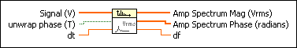

Amplitude and Phase Spectrum VI
Owning Palette: Spectral Analysis VIs
Requires: Full Development System
Computes the single-sided, scaled amplitude spectrum of a real-valued time-domain signal and returns the amplitude spectrum as magnitude and phase.

 Add to the block diagram Add to the block diagram |
 Find on the palette Find on the palette |


 is the floor operation.
is the floor operation.